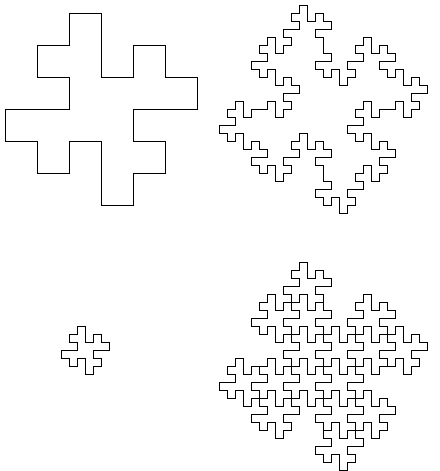

A Relation between Areas and Perimeters
| Suppose we apply the previous construction to each side of a square. The result is a fractal island, that we shall see is also a fractal tile. |
|  |
| For familiar geometric shapes such as a square or circle, there is a simple relation between the area and the perimeter. |
| If A1 and A2 denote the areas of two squares, for example, and P1 and P2 their perimeters, then |
| P2/P1 = (A2/A1)1/2 |
| For areas with fractal perimeters of similarity dimension d, suppose two similar shapes have areas and perimeters measured at the same scale. Then |
| P2/P1 = (A2/A1)d/2 |
| For the example tile pictured, 16 copies make a larger copy of the tile, with perimeter consisting of 8 times the perimeter of the original. Consequently, |
| 8 = |
| and so d = 3/2, agreeing with the previous calculation of the dimension. |
Return to Background.